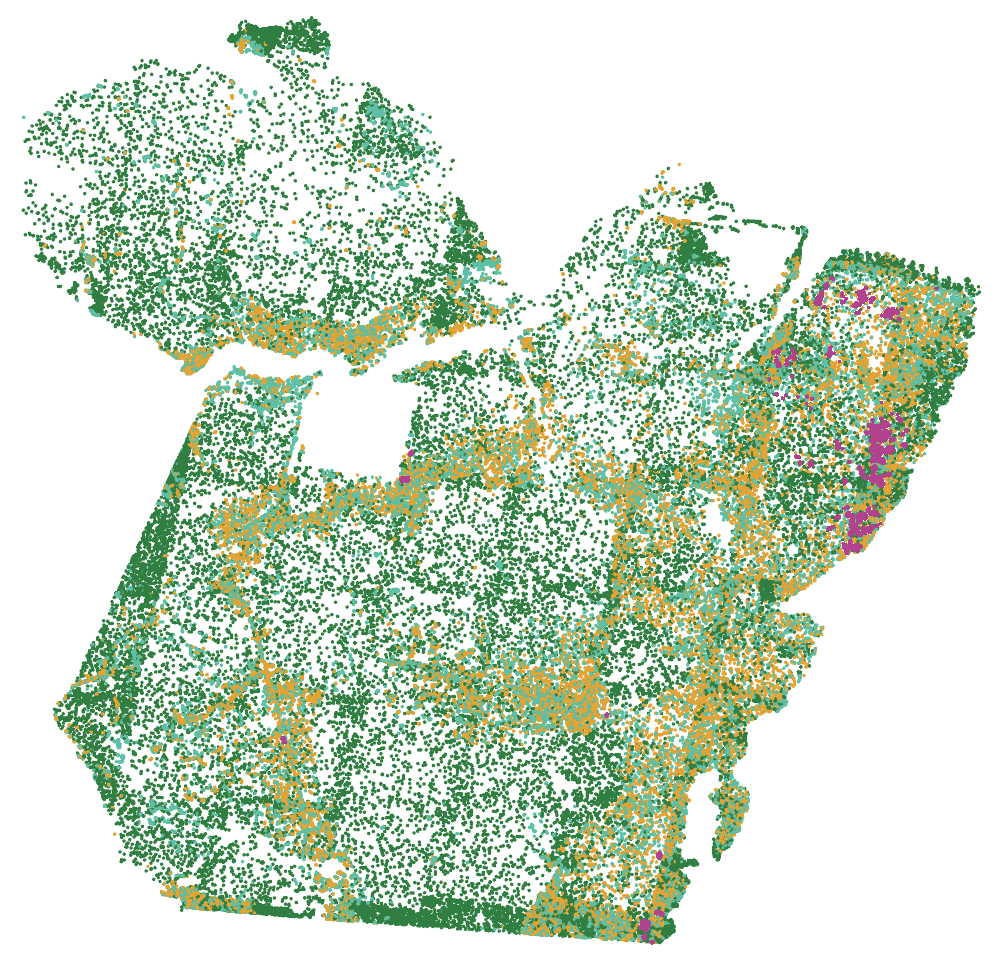
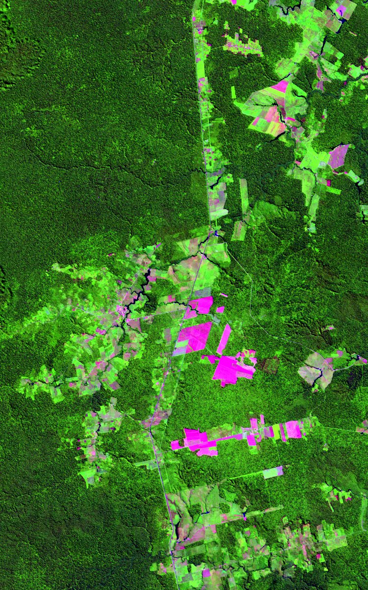

Trajetórias de cobertura
Uma série de imagens de satélite permite acompanhar as mudanças de uso e cobertura da terra ao longo do tempo. A sequência de classes de cobertura de um pixel, data a data, é a sua trajetória; a mudança entre duas datas é uma transição. Com quatro classes e seis datas, existem 46 = 4.096 trajetórias possíveis para cada pixel.
As classes seguem o TerraClass Amazônia, a referência usada no treino e na avaliação:
Vegetação natural florestal primária, sem registro de desmatamento. No TerraClass, a classe vem do mapeamento do PRODES, que considera apenas o desmatamento da floresta primária (Neves et al., 2020).
Áreas de cobertura vegetal natural que sofreram corte raso, em algum momento da série histórica do Prodes e, ao serem abandonadas, entraram em processo de regeneração da cobertura natural
(INPE; Embrapa, 2024). Mesmo que volte a ter dossel florestal, a área continua VS e não volta a ser Floresta (Neves et al., 2020).
Pastagem herbácea e pastagem arbustiva/arbórea do TerraClass, agregadas.
Cultura agrícola temporária do TerraClass.
Um pixel de Belterra, 2005–2010
linha 916 · coluna 408Problema
Na comparação pós-classificação, cada imagem é classificada à parte e os mapas são empilhados. A qualidade da trajetória depende da classificação de cada data, os erros de todas as datas se somam e a correção só acontece no fim do processo.
Como a Vegetação Secundária é, por definição, a floresta que já sofreu corte raso, um pixel que deixou de ser Floresta não volta a ser Floresta. Por isso, VS → F, PA → F e AG → F são transições proibidas; todas as outras são permitidas. Das 4.096 trajetórias possíveis, 1.093 (26,7%) são válidas: a que fica em Floresta nas seis datas e as que saem da Floresta em algum ano e não voltam.
As seis classificações da CNN, data a data, numa janela de 5 × 5 pixels. A coluna marcada é o pixel da seção 01: a sua trajetória volta de VS para F em 2008, uma transição proibida (✕).
CMAP
O CMAP (Reis et al., 2020) escolhe a sequência de classes que maximiza o produto das probabilidades condicionais de cada data pela probabilidade a priori da trajetória, dada por uma matriz de transições que zera a probabilidade das trajetórias impossíveis:
Na abordagem simplificada, usada aqui, todas as trajetórias válidas (conjunto , com 1.093 trajetórias) têm o mesmo peso:
O resultado é sempre uma trajetória válida, e o CMAP só altera os pixels cuja trajetória data a data é inválida. Como a volta para a Floresta é proibida, cada desmatamento é registrado uma única vez.
Classes parecidas no espectro, diferentes no tempo. Uma Vegetação Secundária avançada pode ter resposta espectral próxima à da Floresta, mas as duas se distinguem pela história do pixel. Numa única data, o classificador só vê o espectro. O CMAP acrescenta a informação temporal: se o pixel deixou de ser Floresta, as datas seguintes não podem ser Floresta, mesmo que pareçam. É assim que o CMAP ajuda a separar classes espectralmente parecidas que a definição distingue pelo tempo.
A teoria completa, com um exemplo calculado à mão, está no notebook CMAP_teoria_e_aplicacao.
A trajetória data a data (F F VS F AG AG) é inválida. As saídas mais baratas são trocar 2007 para F, o que multiplica a probabilidade por 0,42/0,51 ≈ 0,84, ou trocar 2008 para VS (0,32/0,66 ≈ 0,48). O CMAP fica com a primeira: Floresta até 2008 e Agricultura em 2009 e 2010, como no TerraClass.
O MaxVer erra 2006, a imagem de agosto, e a trajetória data a data é inválida. Com probabilidades pouco separadas, o CMAP chega à mesma trajetória da CNN e acerta as duas datas do TerraClass.
O RF com contexto chama 2005 e 2006 de VS e volta para Floresta em 2007. A trajetória válida mais provável para essas probabilidades é VS até 2008: o CMAP elimina a transição impossível, mas erra 2008 (acerta 2010).
O RF chama 2005 a 2007 de VS. O CMAP mantém VS até 2008 e erra a data de referência de 2008 (acerta 2010): a correção segue as probabilidades que recebe.
Objetivo e pergunta de pesquisa
Treinar uma rede neural convolucional (CNN) e usar suas probabilidades no CMAP para classificar as trajetórias de cobertura da série anual Landsat 5 TM de 2005 a 2010, comparando-a a um classificador paramétrico (máxima verossimilhança gaussiana, MaxVer) e a um não paramétrico (Random Forest, RF), e separar a Floresta Primária da Vegetação Secundária.
O contexto espacial da CNN melhora, no CMAP, a acurácia das trajetórias e a detecção do desmatamento?
Literatura
Relevância
O projeto se relaciona sobretudo ao ODS 15 (Vida terrestre), meta 15.2: deter o desmatamento e restaurar florestas degradadas. Trajetórias consistentes distinguem o desmatamento da regeneração e permitem estimar a idade da vegetação secundária, o que interessa também ao ODS 13 (Ação climática), pelo papel da regeneração no balanço de carbono.
A área de estudo, em Belterra (PA), junto à BR-163 e à Floresta Nacional do Tapajós, é um mosaico de floresta, pasto, agricultura e vegetação secundária.
No ecossistema espacial, o projeto usa o acervo gratuito Landsat e uma metodologia desenvolvida no Laboratório de Investigação em Sistemas Socioambientais (LiSS) do INPE.
A contribuição é verificar se classificadores de aprendizado profundo, hoje dominantes na classificação de imagens, geram probabilidades adequadas a métodos multitemporais como o CMAP, reduzindo erros na classificação de trajetórias na Amazônia.
Dados

Patches de treino (centro de cada janela de 9 × 9 pixels), coloridos pela classe do TerraClass. O treino exclui a cena 227/062 inteira e uma zona de 10 km em torno da área de estudo (tracejado).
- Treino
- TerraClass Amazônia 2008 e 2010 em todo o Pará: 100.643 patches de 9 × 9 pixels em 113 cenas-ano de 63 órbitas-ponto, recortados no Google Earth Engine (Gorelick et al., 2017). Landsat 5 TM, Collection 2, nível 2, seis bandas.
- Teste
- Belterra (PA), órbita-ponto 227/062: 750 × 1.200 pixels de 30 m (22,5 × 36 km), uma imagem por ano.
01/07/200521/08/200621/06/200723/06/200812/07/200929/06/2010
- Referência
- TerraClass 2008 e 2010 na área de estudo, usado só na avaliação. Em 2008, 73,0% de Floresta, 9,9% de VS, 13,5% de Pastagem e 3,5% de Agricultura; 2,65% dos pixels mudaram de classe até 2010.
Em relação à proposta, o treino passou a usar o TerraClass de todo o Pará, e não as amostras de campo de Reis et al. (2020). Nenhuma amostra de treino vem da área de estudo.
Metodologia
MaxVer
Máxima verossimilhança gaussiana: uma normal multivariada por classe, no pixel central. É o classificador do CMAP original.
RF
Random Forest com 200 árvores no pixel central. A probabilidade é a fração das árvores que votam em cada classe.
RF com contexto 5 × 5
O pixel central mais a média e o desvio-padrão de cada banda na janela de 5 × 5. É o controle da CNN.
CNN 5 × 5
Rede convolucional rasa: duas camadas 3 × 3 (32 e 64 filtros) e 26.852 parâmetros, que aprende os padrões espaciais da janela.
Cada classificador tem um único modelo para as duas datas de treino e todas as cenas, aplicado às seis imagens de Belterra. A probabilidade de cada pixel é a média dos cinco modelos da validação cruzada; a versão (bruta ou calibrada por temperatura; Guo et al., 2017) é a de menor log-verossimilhança negativa nos folds do Pará. Classes equiprováveis no treino tornam as saídas proporcionais às verossimilhanças que o CMAP recebe.
Por que uma rede rasa? É o modelo mínimo que aprende filtros espaciais; redes leves aplicadas a patches já foram usadas no mapeamento com Landsat (Song et al., 2019). Com a mesma janela de 5 × 5 pixels, a comparação com o RF com contexto isola uma única diferença: o contexto é aprendido pela rede ou resumido em média e desvio-padrão.
Avaliação. Classificação data a data (classe mais provável de cada data) e CMAP, a partir das mesmas probabilidades, comparadas ao TerraClass 2008 e 2010 em todos os pixels da legenda: acurácia global e balanceada, trajetórias inválidas e mudanças entre 2008 e 2010. Intervalos de 95% por bootstrap em blocos de 1,5 km.
Validação cruzada no Pará
Acurácia balanceada no teste, 5 divisões por órbita-ponto (cenas não vistas no treino).
A CNN superou o RF com contexto da mesma janela nas 5 divisões.
Explorador de trajetórias
Escolha o classificador e a camada e clique em um pixel. Cada recorte tem 360 × 360 pixels (10,8 × 10,8 km). A ficha mostra o pixel nas seis imagens, as probabilidades de cada data, a classificação data a data, o CMAP e a confiança da trajetória.

Resultados
Pixel × janela de 5 × 5
O RF com contexto usa o mesmo algoritmo do RF e acrescenta a média e o desvio-padrão de cada banda na janela: em Belterra, a acurácia balanceada sobe 0,059 (2008) e 0,060 (2010), as trajetórias inválidas caem de 40,4% para 23,8% e as mudanças falsas, de 18,2% para 9,9%.
A CNN usa a mesma janela, mas aprende o contexto: sobre o RF com contexto reduz as trajetórias inválidas para 9,7%.
Depois do CMAP, o RF com contexto tem um pouco menos de mudanças falsas que a CNN (6,7% contra 7,4%).
Antes e depois do CMAP
Data a data, a CNN produz trajetórias inválidas em 9,7% dos pixels, contra 23,8% do RF com contexto e cerca de 40% dos classificadores de pixel. O CMAP leva todos a zero.
Pixels alterados pelo CMAP, por data
Trajetórias inválidas na classificação data a data
cena inteira · 22,5 × 36 km · 2005–2010Em vermelho, pixels cuja trajetória data a data volta para Floresta; em cinza, pixels sem as seis datas. Os quadros A e B são os recortes do explorador. Com o CMAP, nenhum pixel tem trajetória inválida, em nenhum classificador.
Comparação com o TerraClass
A CNN tem a maior acurácia nas duas datas, com e sem CMAP. Com o CMAP, supera o RF com contexto em acurácia global e em acurácia balanceada.
O CMAP quase não muda a acurácia global e aumenta a balanceada em todos os casos (média de 5%).
O ganho do CMAP vem da VS
O aumento da acurácia balanceada com o CMAP vem da Vegetação Secundária: a acurácia do produtor da VS subiu em todos os classificadores e nas duas datas, e a do usuário continuou igual ou subiu.
É o efeito da regra temporal: pixels que pareciam Floresta depois de já terem saído da Floresta passam a VS.
Menos mudanças falsas
No TerraClass, 2,65% dos pixels mudaram de classe entre 2008 e 2010. A classificação data a data registra mudança em 10% a 19% dos pixels, a maior parte falsa. O CMAP reduz as mudanças falsas em cerca de 20% a 40%.
Correção de 2006 e perda acumulada
No MaxVer, o CMAP aumenta a área de Floresta de 2006 de 46,9% para 74,4%. Como a volta para a Floresta é proibida, um pixel de Floresta chamado de VS num ano tende a ficar fora da Floresta nos anos seguintes: a Floresta do CMAP cai ao longo da série, mais no RF (de 67% para 56%) do que na CNN (de 70% para 65%).
Confiança das trajetórias
A confiança da trajetória é a probabilidade a posteriori da trajetória escolhida pelo CMAP: a parte da probabilidade total, somada sobre as trajetórias válidas, que cabe a ela.
Com a CNN, 13,5% dos pixels têm confiança ≥ 0,9 e acertam as duas datas de referência em 99,8% dos casos. Os 40% com confiança abaixo de 0,5 acertam 53,5%, e os 20% menos confiáveis concentram 52% dos erros. Onde a trajetória data a data era inválida, a confiança média é 0,24, contra 0,57 onde era válida.
A medida depende de probabilidades bem calibradas. Com o RF com contexto, o padrão é o mesmo da CNN. Com o MaxVer e o RF, a confiança fica baixa (medianas de 0,08 e 0,12) e subestima muito o acerto: no MaxVer, os pixels com confiança entre 0,1 e 0,2 acertam 97% das duas datas.
Valores calculados com o código da seção 6 do notebook 4_cmap sobre as probabilidades da etapa 3.
Pixels por faixa de confiança
Acerto das duas datas (2008 e 2010) por faixa
Conclusões
O contexto espacial melhora as probabilidades de cada data
Do RF ao RF com contexto e deste à CNN, a acurácia balanceada sobe e as trajetórias inválidas caem (de 40,4% para 23,8% e 9,7%). Com a mesma janela, o contexto aprendido pela CNN superou o contexto resumido do RF, com intervalos de 95% acima de zero.
A CNN fornece as melhores probabilidades para o CMAP (será?)
Melhores mapas de probabilidade data a data geram, consequentemente, melhores resultados no CMAP. Nesse estudo a CNN, mesmo rasa, produziu melhores resultados probabilisticos.
O CMAP separa melhor a Floresta da Vegetação Secundária
Zero trajetórias inválidas, maior acurácia do produtor da VS em todos os classificadores e menos mudanças falsas entre 2008 e 2010.
A confiança da trajetória indica onde confiar no mapa
Com a CNN, os pixels com confiança ≥ 0,9 (13,5% do total) acertam 99,8% das duas datas de referência; metade dos erros está nos 20% menos confiáveis.
Limitações
- Classificar uma trajetória válida não significa classificá-la corretamente: o CMAP escolhe a trajetória válida mais provável segundo as probabilidades que recebe (veja o exemplo do RF na seção 03).
- A Vegetação Secundária é superestimada: a CNN atribui VS a 16% a 19% da área em 2008 e 2010, contra 10% a 11% no TerraClass.
- Com a matriz simplificada, um erro de VS tende a se propagar para os anos seguintes, o que cria uma perda de Floresta ao longo da série.
- A referência também tem erros: a exatidão publicada do mapa TerraClass 2008 original é de 76,6% com 12 classes (Almeida et al., 2016); não foi encontrada avaliação oficial para os mapas usados.
Próximos passos
- Matriz de transição discriminativa de Reis et al. (2020), adaptada às quatro classes.
- Testar outros tamanhos de patch na CNN e no RF com contexto.
- Transferência no tempo: incluir as outras datas da série TerraClass e usar mais classes, inclusive a de desmatamento.
- Usar dados já classificados como âncoras de classes ao longo do tempo: nas datas em que a classe é conhecida, a trajetória fica presa a ela.
- Usar a confiança da trajetória para priorizar a revisão visual dos mapas.
Referências
- ALMEIDA, C. A. de et al. High spatial resolution land use and land cover mapping of the Brazilian Legal Amazon in 2008 using Landsat-5/TM and MODIS data. Acta Amazonica, v. 46, n. 3, p. 291–302, 2016. doi:10.1590/1809-4392201505504.
- DUTRA et al. A generative method for simultaneous classification of remote sensing time series data using an ensemble of decision tree classifiers. In: SIMPÓSIO BRASILEIRO DE SENSORIAMENTO REMOTO, 20., 2023. Anais […]. São José dos Campos: INPE, 2023. proceedings.science/sbsr-2023.
- GORELICK, N. et al. Google Earth Engine: planetary-scale geospatial analysis for everyone. Remote Sensing of Environment, v. 202, p. 18–27, 2017. doi:10.1016/j.rse.2017.06.031.
- GUO, C.; PLEISS, G.; SUN, Y.; WEINBERGER, K. Q. On calibration of modern neural networks. In: International Conference on Machine Learning, 34., 2017. PMLR, v. 70, p. 1321–1330.
- INPE; EMBRAPA. TerraClass Amazônia: mapas de uso e cobertura da terra de 2008 e 2010. terraclass.gov.br.
- INPE; EMBRAPA. Nota técnica: lançamento dos dados TerraClass. 2024. data.inpe.br.
- NEVES, A. K.; KÖRTING, T. S.; FONSECA, L. M. G.; ESCADA, M. I. S. Assessment of TerraClass and MapBiomas data on legend and map agreement for the Brazilian Amazon biome. Acta Amazonica, v. 50, n. 2, p. 170–182, 2020. scielo.br.
- QUEIROZ, V. D. B. Classificação de trajetórias de cobertura da terra utilizando uma abordagem de máximo a posteriori composto em imagens de multissensores. Dissertação (Mestrado em Sensoriamento Remoto) – Instituto Nacional de Pesquisas Espaciais, São José dos Campos, 2024.
- QUEVEDO, R. P. et al. Land use and land cover changes without invalid transitions: a case study in a landslide-affected area. Remote Sensing Applications: Society and Environment, v. 36, 101314, 2024. doi:10.1016/j.rsase.2024.101314.
- REIS, M. S.; DUTRA, L. V.; ESCADA, M. I. S.; SANT'ANNA, S. J. S. Avoiding invalid transitions in land cover trajectory classification with a compound maximum a posteriori approach. IEEE Access, v. 8, p. 98787–98799, 2020. doi:10.1109/ACCESS.2020.2997019.
- SONG, H.; KIM, Y.; KIM, Y. A patch-based light convolutional neural network for land-cover mapping using Landsat-8 images. Remote Sensing, v. 11, n. 2, 114, 2019. doi:10.3390/rs11020114.
- U.S. GEOLOGICAL SURVEY. Landsat 4–5 TM Collection 2 Level-2 Science Products. usgs.gov/landsat-missions.